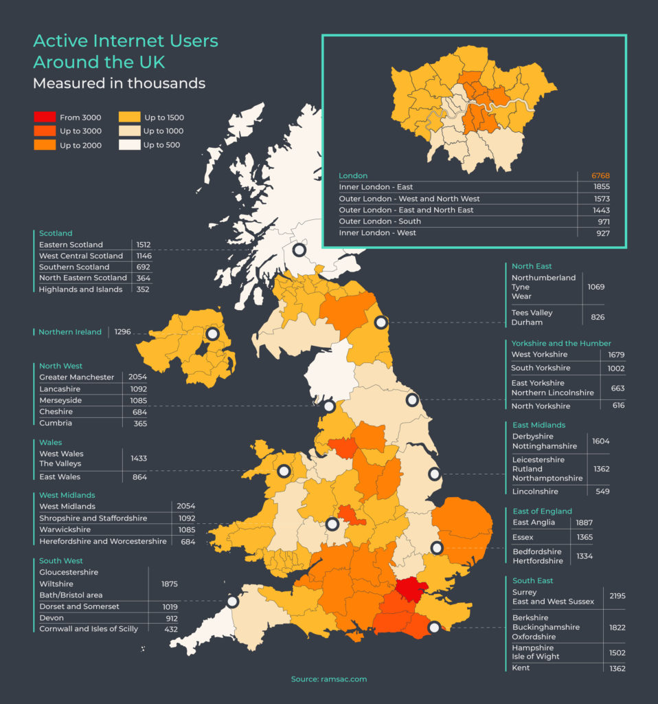
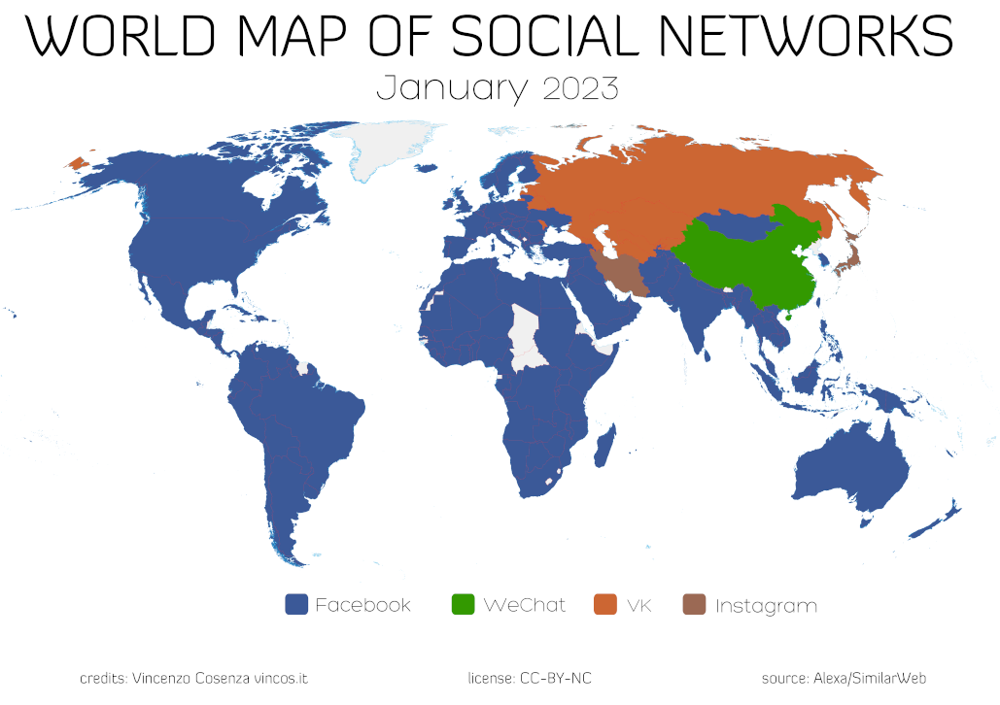
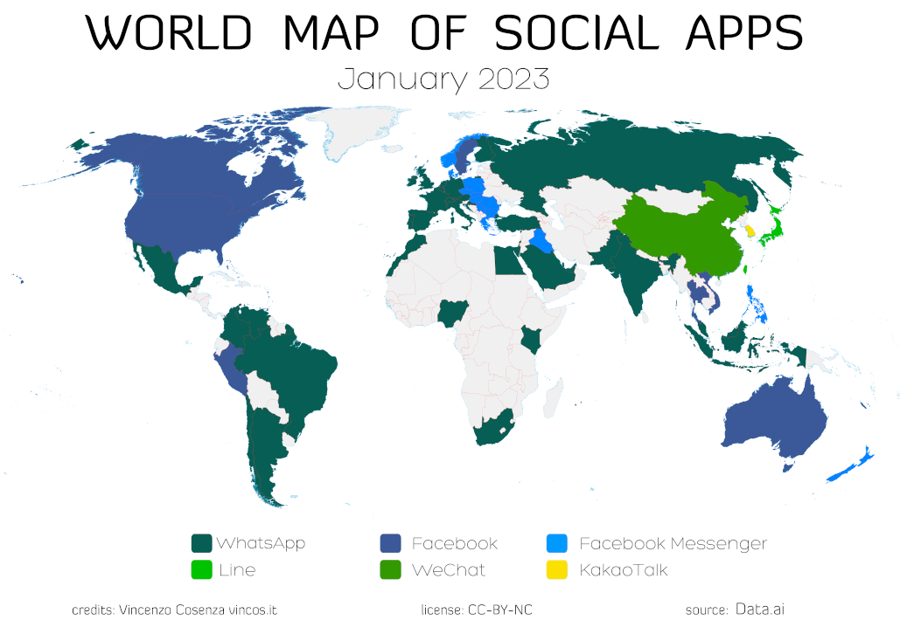

What is the online world?
In general, the online world is anything to do with computers and technology; usually connected over the span of a network(this network is usually the internet)
Here are some statistics
the image above shos the number of active users in the UK per area *numbers are representative in thousands*

The world is divided in 3 major socio-economic blocks: China controlled by Tencent with WeChat/Weixin (tied to Chinese government), ex USSR countries controlled by Megafon with VK (tied to Russian government) and the rest of the world under the Meta influence. Despite 1 billion users, TikTok is not the leader in any of the countries analysed. Facebook has 2,96 billion monthly active users and is the leading social network in 157 out of 167 countries (94%). WeChat, the super app, reigns in China with 1,28 billion monthly active users. VK is the leader in Russian territories with around 100 million active users.

If we consider Instant Messenger usage we will end up with a different map, but with the same kind of fragmentation: Meta and Tencent remain the main antagonists, with South Korea mostly ticking to KakaoTalk (developed by Kakao) and Japan preferring LINE (made by Z Holdings, controlled by Softbank Group and Naver Corporation). WhatsApp, totaling 2 billion daily users, is the most used app in 37 out of 61 nations analysed (West Europe, Russia, Latin America, India, Africa). Facebook leads the way in 8 (including USA and Cananda) and Messenger in 12 (including Australia and East Europe).